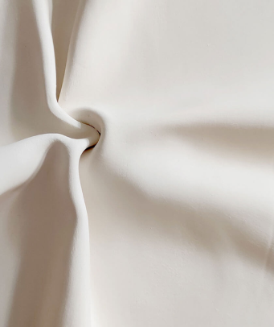
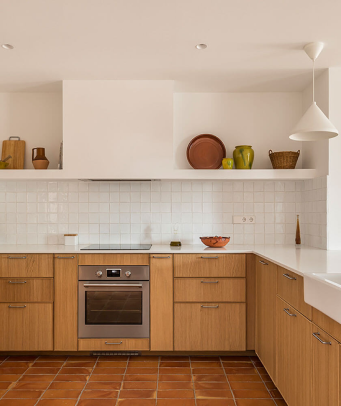
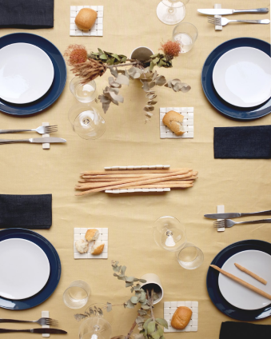

Contemporary craft
and interiors with a
mediterranean soul
I’m a Spanish artisan, designer and architect based in Italy. My work is based on the application of craftsmanship in objects and spaces design with a
contemporary approach.
Influenced by the Mediterranean traditions and culture of my hometown – Valencia – my work develops around ceramics and textiles. Each
creation is the result of the union between design and craftsmanship and emphasizes the beauty of handmade things and their imperfections.
Latest Projects
A selection of projects that are the result of experimentation with natural materials, attention to detail and
craftsmanship techniques. Artwork, ceramics and clothing on commission, interior designs and custom furniture.
Ca Benet renovation /
Plecs /
Ca Benet interior /
A selection of novelties
Milano Sugar Bowl Sole
Set of 4 Bread Plates & 1 Breadstick
Holder Entrellaçat
Raletta Medium Aperitivo Set Blue